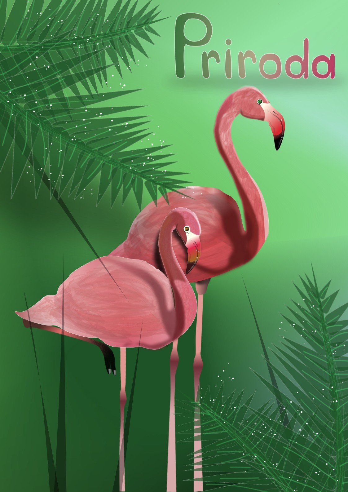
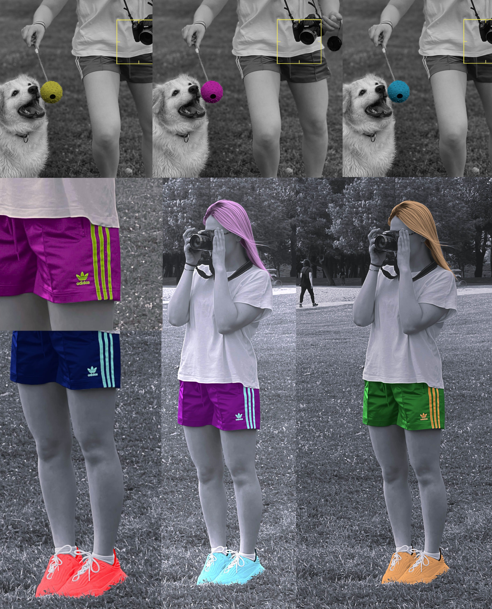
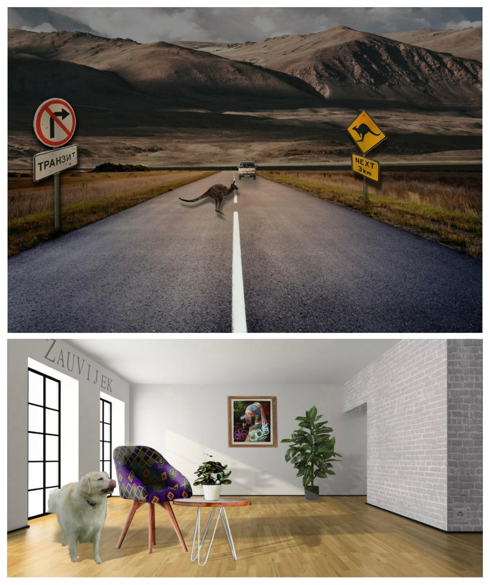

Moje vježbe i projekti
PROJEKTNI ZADATAK 1 – Illustrator
U ovoj vježbi zadatak je bio napraviti vlastiti font, upotrijebiti ga te pomoću alata za crtanje Bezierovih krivulja nacrtati sliku prema zadanom predlošku. Ja sam dobila sliku flamingosa, a zadatak sam napravila u Inkscape-u.
VJEŽBA 6 – Koloriranje
Ova vježba fokusirala se na tehnike neinvazivnog koloriranja slike koje se može primijeniti na crno-bijele slike ili slike u boji kojima želimo promijeniti nijansu određenih područja.
VJEŽBA 3 – Boja, transformacije
Korištenjem Photoshopa radili smo na crtanju oblika prema predlošku i transformaciji oblika. Ja sam napravila svoj crtež pomoću alata Pen kopirajuči originalne konture.

VJEŽBA 4 – Gradijenti, transparencija
U vježbi se obrađuje tema izrade složenih objekata koji se sastoje od više staza metodama spajanja (Unite/Compound path) ili oduzimanja oblika (Difference/Subtract). Apliciranje različitih vrsta gradijenata (linearni, radijalni, mesh...) od dvije ili više boja. Transparencija i poredak slojeva u izradi složene grafike.

VJEŽBA 7, PROJEKTNI ZADATAK 2 – Fotomontaža
Vježba 7, ujedno i projektni zadatak, bio je u svrhu razumijevanja fotomontaže, ubacivanje sjena, proporcija i perspektive. Oba rada napravila sam u programu Photoshop.
